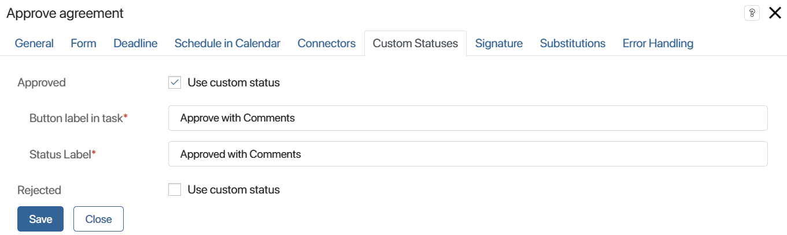

Here is an example of a process with a configured contract approval route.
The process comprises the following steps:
- The initiator prepares the contract and sends it for approval to the lawyers.
- An approval sheet is formed. Any member of the legal department can review the contract and either send it back for revision, attaching a version of the document with comments, or approve it. After making a decision, the approval task will be removed from other users, and the process can branch into several paths.
- If the contract is approved by the lawyer, it is sent for approval to the Head of the Sales Department.
- If the document requires revisions, the initiator will receive a task to make the necessary amendments. The current approval gets closed. The contract will then be sent back for another round of reviews by the approvers, creating a new approval sheet.
- There is error handling for both stages of approval. The system supervisor is assigned to handle the error and send the process back to work.
- Once the lawyer and the Head of the Sales Department approve the document, the process is completed and the final decision is displayed on the contract page. The initiator will receive a task to organize a meeting with the client to sign the contract.
- If the legal team doesn’t review the document within the given timeframe, the CEO will be assigned a task to monitor the approval.
Set up the first approval stage
The initial Approve contract task has four outgoing connectors:
- Approved.
- Rejected.
- Deadline violated.
- Error handling.
- Default connector.
The contract will be sent for approval to all lawyers simultaneously. However, as soon as one of the employees makes a decision, the task will be canceled for all other executors, and the current approval will end. To implement such approval logic, set up the task and conditions for the connectors.
- In the activity settings specify the Manually approval method and select the parallel execution option.
- Set up the Approved connector.
Double-click the connector and go to the Conditions tab. Add the condition Approval Percentage > 0. As soon as someone clicks Approve in the task, it will be canceled for all other approvers, and the process will proceed to the next step: approval by the Head of the Sales Department.
- Set up the Rejected connector.
To ensure that only one employee completes the task, create the Rejection Percentage > 0 condition.
When approving, lawyers can add a new contract version with comments. In this case, the approval sheet will be archived, and the process will be interrupted.
To avoid ending the process, add another condition. Select the OR operator and the Archived value. For the operation, choose the equals symbol. In the Field Value column, click on <Undefined>, select Enter value, and check the box. This way, when adding a new document version, the process will follow the Rejected path.
начало внимание
To use the Archived option, you must set the rules for archiving approval sheets in the app settings.
конец внимание
If one of the set conditions is met, the initiator will receive the Revise contract activity, and the approval task will be canceled for other lawyers.
- Set up the Deadline violated connector.
Limit the execution time for the Approval task. If the lawyers fail to make a decision on time, the CEO will receive a monitoring task.
Open the activity settings and go to the Deadline tab. Specify an exact time for the task, for example, three days, and in the Interrupt field, select the transition to the Deadline violated task. After saving the settings, this connector on the diagram will be marked with a clock icon.
- Set up the default connector.
To allow the process to continue if none of the conditions are met, a default connector must be specified.
You cannot set conditions for such a connector. Therefore, we cannot choose the Approved or Rejected paths. Add another connector, and in the activity settings, mark it as the default connector. On the diagram, it will be depicted as an arrow with a diagonal line.
- Set up the Error handling connector.
You can set up a special path to continue the process in case of an error in the approval activity. In our example, in the path for error handling, the system supervisor is tasked with solving the problem and sending the process back to work.
To do this, open the Error Handling tab, check the Interrupt box and select the configured Error handling connector. The icon will appear next to it in the diagram.
- Add a custom status Approve with comments so that during the process the lawyer can additionally draw the attention of the Head of the Sales Department to some aspects of the contract. The status will be displayed in the approval task as a button. If the lawyer clicks it, their comment in the approval sheet will be marked with a different color. The custom status does not affect the process: when it is used, it is considered that the lawyer has approved the contract.
To create an additional status, go to the Custom Statuses tab in the activity settings. Enable Use custom status next to the Approved field and specify the name of the button in the task and the text of the status in the approval sheet.

If a lawyer clicks the Approve with comments button while performing a task, the process will proceed to approval by the Head of the Sales Department. The user’s decision will be displayed in the approval sheet.
- Place the End Approval element on the scheme after the lawyers' task. Then, if an employee sends the contract for revision, the approval sheet will close with the Rejected resolution.
Set up the second approval stage
The second Approve contract task is located in the swimlane with a single executor. This means that the parallel or sequential approval setting does not apply to it. Set the following parameters for it:
- Select the Manually approval method in the settings.
- On the Connectors tab, set the Approval Percentage > 0 condition for the Approved connector. The process will follow this path only if the head approves the document.
- Select the Rejected connector as the default connector.
- On the Error Handling tab, enable the Interrupt option and specify a connector for error handling when the activity is running. The system supervisor will be tasked with solving the problem and sending the process back to work.
- After the second task, add the End approval activity, so the initiator sees the decision in the approval sheet when signing the contract with the contractor.
Save and publish the configured process.
Found a typo? Select it and press Ctrl+Enter to send us feedback